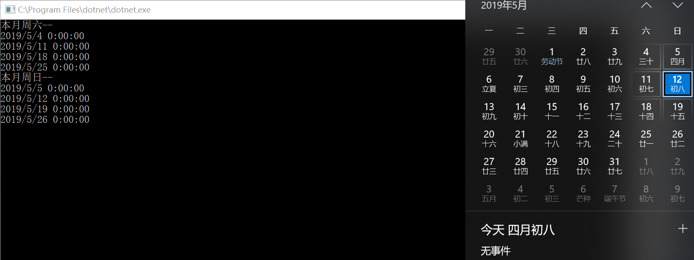

最近项目中有用到本月所有的周六，周日，特此分享一下！
算法思路：写一个循环，条件为本月开始日期、本月截至日期，通过循环获取第一个周六，加一天就是周日，每增加六天就是下一个周六，依次类推，循环到月末
代码如下：
//计算本月有哪些天是周六，周日
//本月开始日期
var starMoth = DateTime.Now.AddDays(-DateTime.Now.Day + 1).Date;
//本月截至日期
var stopMoth = starMoth.AddMonths(1).AddDays(-1).Date;
var listSaturday = new List<DateTime>();
var listSunday = new List<DateTime>();
var temp = starMoth;
while (temp <= stopMoth)
{
if (temp.DayOfWeek == DayOfWeek.Saturday && temp <= stopMoth)
{
listSaturday.Add(temp.Date);
if (temp.AddDays(1).Date <= stopMoth)
{
listSunday.Add(temp.AddDays(1));
}
temp = temp.AddDays(6);
}
else
{
temp = temp.AddDays(1);
}
}
Console.WriteLine("本月周六--");
listSaturday.ForEach(n => Console.WriteLine(n.Date));
Console.WriteLine("本月周日--");
listSunday.ForEach(n => Console.WriteLine(n.Date));
Console.ReadKey();
运行结果：
